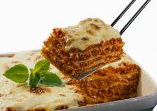

Em um liquidificador adicione os ovos, o chocolate em pó, a manteiga, a farinha de trigo, o açúcar e o leite, depois bata por 5 minutos
Adicione o fermento e misture com uma espátula delicadamente
Em uma forma untada, despeje a massa e asse em forno médio 180 ºC, preaquecido por cerca de 40 minutos

Lasanha
ingredientes
250g de massa para lasanha pré-cozida
3/4 de xícara (chá) de queijo parmesão ralado
1 porção de molho à bolonhesa
1 porção de molho branco
Modo de preparo
Preaqueça o forno a 200ºC (temperatura média).
Quebre as folhas de massa, uma a uma, ao meio, formando dois quadrados (desta forma fica mais fácil cortar
e servir a lasanha sem que ela despedace).
Num refratário de cerca de trinta por vinte centímetros, faça uma camada de molho branco e coloque por cima
um pouco de molho à bolonhesa (começar a montagem com eles, ajuda a hidratar a massa e evita que ela grude na travessa).
Sobre os molhos, faça uma camada de massa, colocando os quadrados lado a lado até cobrir o fundo da travessa.
Sobre a primeira camada de massa, espalhe um pouco de molho à bolonhesa e regue com molho branco.
Cubra com mais uma camada de massa e repita esta operação até chegar a cerca de um centímetro da borda do
refratário, finalizando com uma camada de molho à bolonhesa e molho branco.
Polvilhe queijo parmesão ralado e leve para assar por 15 a 20 minutos, ou até que o topo fique dourado e o
queijo, gratinado.